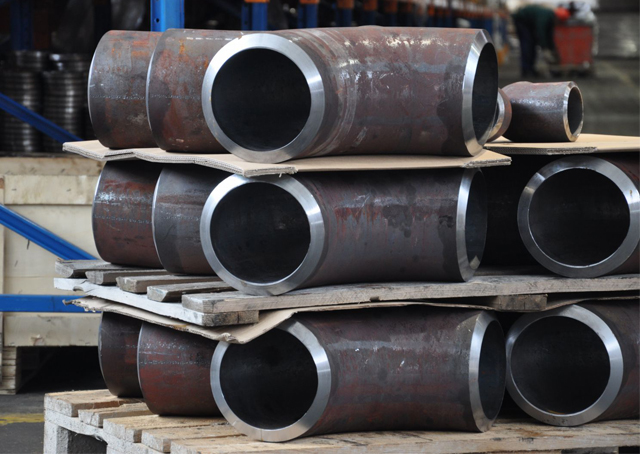

Детали трубопровода
- Отвод стальной
- Отвод нержавеющий
- Переход стальной
- Переход нержавеющий
- Тройник стальной
- Тройник нержавеющий
- Заглушка стальная
- Заглушка нержавеющая
- Фланцы стальные
- Фланцы нержавеющие
Компания "МПК Сталь" осуществляет поставки соединительных деталей трубопроводов по всей территории РФ и СНГ. К нам обращаются нефтяные, газовые и строительные компании со всех уголков России. Мы реализуем продукцию как оптом, так и в розницу.
У нас можно купить детали трубопроводов полностью соответствующие стандартам ГОСТ, ASME, DIN, ТУ. Отвод - деталь, предназначенная для плавного изменения направления трубопровода. Отводы крутоизогнутые бесшовные приварные из углеродистой и низколегированной стали предназначены для соединения сваркой встык труб одного диаметра, расположенных под углом. Стальные отводы широко применяются в коммунальных сетях, при строительстве нефте- и газопроводов, в химической отрасли и благодаря своим техническим характеристикам некоторые виды могут быть использованы в условиях Крайнего Севера. Переход - деталь, предназначенная для соединения труб на участках изменения диаметра трубопровода. В результате уменьшается или увеличивается движущийся поток вещества. Переходы применяются на нефтегазовых и химических предприятиях, в энергетической промышленности, коммунальной сфере и т. д. Различают концентрические и эксцентрические трубопроводные переходы. Концентрические элементы используют в вертикальных конструкциях, а эксцентрические - в горизонтальных трубопроводах. Концентрические переходы имеют форму усеченного конуса и применяются для труб на подвесных опорах. Эксцентрические переходы, сужая или расширяя поток, образуют в сечении прямоугольный треугольник. По мнению специалистов, использование эксцентрического перехода исключает образование застойной зоны в трубе.
Тройник - деталь, предназначенная для присоединения к магистральному проводу боковых ответвлений и распределения технологических потоков по трубопроводам. Различают 2 типа тройников: равнопроходные, с одинаковым диаметром всех входных отверстий и переходные, с разными диаметрами отверстий корпуса и горловины. Тройники трубопроводов применяются в паровых и водопроводных системах холодного, горячего водоснабжения и отопления, а также на предприятиях нефтегазовой и химической промышленности.
Заглушка - деталь, предназначенная для закрывания концевых отверстий в трубопроводах, перекрытия неиспользуемых участков трубопроводов, а также в конструкциях различных емкостей.
Днище - полая деталь емкости, является неотъемлемой частью почти любого сосуда и аппарата. Эллиптические заглушки и днища преимущественно изготавливают из листового проката штамповкой. Они применяются на любых типах трубопроводов; на предприятиях энергетической, нефтяной, газовой и химической промышленности; для изготовления сосудов, аппаратов и котлов, работающих под давлением.
